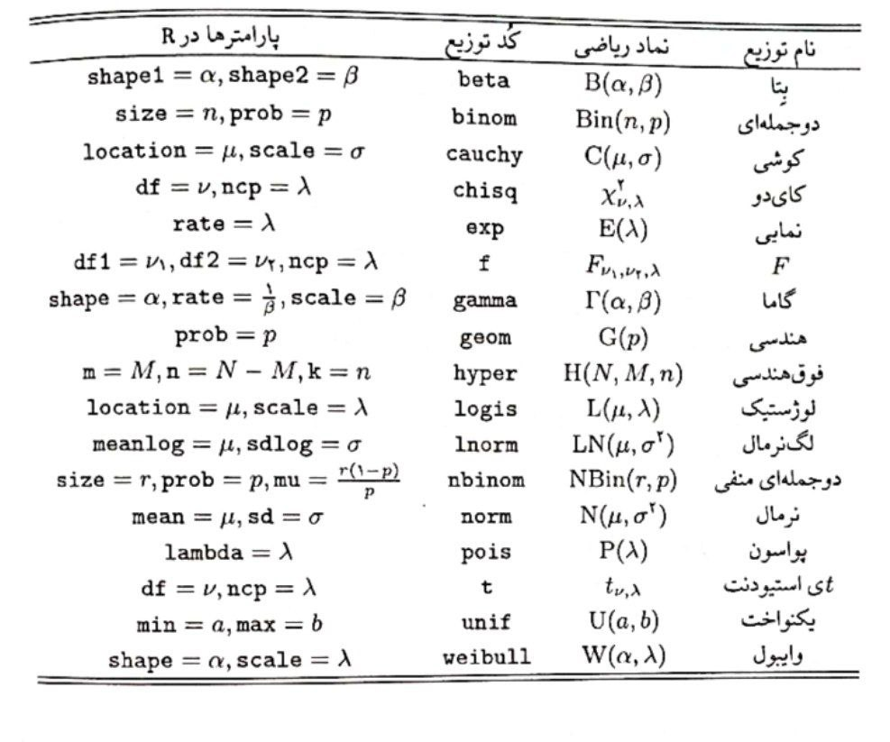

مثال 1: احتمال اینکه در یک خانواده چهارفرزندی، فرزند اول و آخر پسر باشند را محاسبه کنید.
حل: برای حل این مثال میتوان به دو روش عمل کرد. در روش اول مقدار دقیق این احتمال را محاسبه میکنیم. برای این کار ابتدا فضای نمونه و پیشامد مطلوب را به ترتیب با توابع expand.grid() و subset را مشخص میکنیم.
child_1 child_2 child_3 child_4
1 b b b b
2 g b b b
3 b g b b
4 g g b b
5 b b g b
6 g b g b
7 b g g b
8 g g g b
9 b b b g
10 g b b g
11 b g b g
12 g g b g
13 b b g g
14 g b g g
15 b g g g
16 g g g g
تمرین کلاسی: در آزمایش پرتاب سه تاس سالم، احتمال آنکه مجموع مقدار دو تاس اول و سوم کمتر از تاس دوم باشد را بیابید.
آشنایی با توابع any وall
تابع all() تابعی است که یک ورودی از جنس عبارتهای منطقی میگیرد و اگر تمام ورودیها مقادیر TRUE داشته باشند مقدار TRUE و در غیر این صورت مقدار FALSE را در خروجی نمایش میدهد.
x =c(2 , 5 , 12)y =c(-2 , 5 , 12)all(x >0)
[1] TRUE
all(y >0)
[1] FALSE
تابع any() تابعی است که یک ورودی از جنس عبارتهای منطقی میگیرد و اگر حداقل یکی از این ورودیها مقدار TRUE داشته باشد مقدار TRUE و در غیر این صورت مقدار FALSE را در خروجی نمایش میدهد.
any(x <0)
[1] FALSE
any(y <0)
[1] TRUE
مثال 3: آزمایش پرتاب 4 تاس سالم را در نظر بگیرید. با چه احتمالی حداقل یک تاس بر 6 بخشپذیر است؟
n <-1e5result <-replicate(n,{ x =sample(1:6, 4 , replace = T)any(x %%6==0)})mean(result)
[1] 0.51718
احتمال شرطی
مثال 1: دو تاس را پرتاب کنیم، احتمال آنکه تاس اول \(2\) باشد به شرط آنکه مجموع دوتاس برابر \(7\) باشد چقدر است؟
حل. فرض کنید \(A\) پیشامد 2 بودن تاس اول و \(B\) پیشامد مجموع 7 باشد. مقدار واقعی این احتمال به سادگی با استفاده از قاعده بیز به صورت زیر محاسبه می شود. \[
\mathbb{P}(A | B) = \dfrac{A \cap B}{B} = \dfrac{\dfrac{1}{36}}{\dfrac{6}{36}} = \dfrac{1}{6} = 0.166667
\]
تمرین 1: یک سکه نااریب را سه بار میاندازیم. فرض کنید \(A\) پیشامد مشاهده شیر و خط با هم و \(B\) پیشامد حداکثر یک شیر باشد.
مقدار دقیق احتمالهای \(\mathbb{P}(A), \mathbb{P}(B)\) را بیابید.
نشان دهید این دو پیشامد مستقل هستند و اگر سکه را دوبار بیاندازیم مستقل نیستند.
تمرین 2: از یک دسته ورق بازی، دو ورق یک به یک با جایگذاری بیرون میآوریم. احتمال قرمز بودن هر دو ورق را بیابید (مقدار دقیق و مقدار شبیهسازی)
توزیعهای احتمال
محاسبههای مربوط به توزیعهای احتمال پرکاربرد از جمله توزیع بتا، دوجملهای، کوشی، کایدو، نمایی، \(F\) ، گاما، هندسی، لگنرمال، نرمال، پواسون، تی استیودنت، یکنواخت و غیره، در R امکانپذیر است. هر یک از این توزیعها با یک کد اختصاصی شناخته میشوند و با افزودن حروف d، p، q یا r به آغاز کد مربوط به هر توزیع، تابعی بهدست میآید که به ترتیب تابع چگالی احتمال، تابع توزیع، تابع چندک و تولید عددهای تصادفی برای آن توزیع را در اختیار میگذارد.
نکته 1: برای بهکارگیری این تابعها، علاوه بر شناسههای مورد نیاز باید پارامترهای هر توزیع نیز مشخص شوند. برای اطلاعات بیشتر راهنمای توابع را ببینید.
نکته 2: توزیعهای جدیدی که شناسه آنها در R وجود ندارد باید باید با توابع مناسب کدنویسی شوند.

مثال 1: مقادیر خواسته شدهی زیر را محاسبه کنید.
مقدار تابع توزیع نرمال با میانگین 2 و واریانس 4 در نقطه \(x=2\)
مقدار تابع احتمال توزیع پواسون با پارامتر \(\lambda = 4\) در نقطه \(x = 1\)
صدک 95 توزیع t با 5 درجه آزادی
تولید 20 عدد از توزیع هندسی با پارامتر 0.9
# Part apnorm(2, mean =2, sd =2)
[1] 0.5
# Part bdpois(1,lambda =4)
[1] 0.07326256
# Part cqt(0.95, df =5)
[1] 2.015048
# Part drgeom(20, prob =0.9)
[1] 2 1 0 0 0 0 0 0 1 0 0 0 0 0 0 0 0 0 0 0
تمرین کلاسی 1: به عنوان نمونه از میان توزیعهای ذکر شده در جدول بالا مواردی را انتخاب و چهار تابع معرفی شده را برای آن بدست آورید.
مثال 2: فرض کنید \(X \sim \mathcal{N}(\mu = 2, \sigma^2 = 9)\) باشد. موارد خواسته شدهی زیر را بدست آورید.
1- \(\mathbb{P}(X \leq 2)\)
2- \(\mathbb{P}(2 < X < 4)\)
3- \(\mathbb{E}(X)\)
4- \(\mathbb{E}(X^2)\)
5- \(\mathbb{V}ar(X)\)
6- \(M_X(t)\)
# Part apnorm(2 ,2,3)
[1] 0.5
x =rnorm(1e6 , 2 , 3)mean(x <=2)
[1] 0.499561
# Part bpnorm(4 ,2,3) -pnorm(2 ,2,3)
[1] 0.2475075
x =rnorm(1e6 , 2 , 3)mean(x>2& x<4)
[1] 0.247946
# Part cmean(x)
[1] 2.001127
# Part dmean(x^2)
[1] 12.98728
# Part evar(x)
[1] 8.98278
# Part fexp(6.5)
[1] 665.1416
mean(exp(x))
[1] 697.4461
مثال 3: فرض کنید \(X \sim \mathbb{P}o(\lambda = 3)\) باشد، احتمال های زیر را محاسبه کنید. \[
\begin{aligned}
1.~ &\mathbb{P}(X = 2 )\\
2.~ &\mathbb{P}(X > 2 )
\end{aligned}
\]حل.
# 1dpois(2 , lambda =3)
[1] 0.2240418
set.seed(1)x =rpois(1e6 , lambda =3)mean(x==2)
[1] 0.223438
# 21-ppois(2 , lambda =3)
[1] 0.5768099
1-(sum(dpois(0:2 , lambda =3)))
[1] 0.5768099
set.seed(1)x =rpois(1e6 , lambda =3)mean(x>2)
[1] 0.577181
مثال 4: اگر \(X, Y \sim \mathbb{E}xp(\lambda = 2)\) باشند، مقدار احتمال \(\mathbb{P}(X < Y)\) را محاسبه کنید.
در این بخش با استفاده از آنچه در این فصل فرا گرفته ایم، درستی چند نامساوی معروف آمار را بررسی می کنیم.
نامساوی مارکوف
فرض کنید \(X\) یک متغیر تصادفی و \(h(.)\) تابعی غیر منفی باشد. اگر \(\mathbb{E}[h(X)]<\infty\)، آنگاه برای هر \(a > 0\) داریم: \[
\mathbb{P}(h(X)\geq a) \leq \dfrac{\mathbb{E}[h(X)]}{a}
\]مثال: با فرض \(h(x) = x^2\)، اگر متغیر تحت بررسی دارای توزیع نرمال استاندارد باشد، درستی نامساوی مارکوف را بررسی کنید.
n =1e6X =rnorm(n)h = X^2a =0.9mean(h >= a) <=mean(h)/a
[1] TRUE
نامساوی چبیشف
با انتخاب \(h(x) = |x|\) در نامساوی مارکوف و با توجه به اینکه \(\mathbb{P}(|X|\geq a) = \mathbb{P} (X^2 \geq a^2)\)، داریم: \[
\mathbb{P}(|X|\geq a) \leq \dfrac{\mathbb{E}[X^2]}{a^2}
\]مثال: برای مثال قبل، درستی نامساوی چبیشف را بررسی کنید.
n =1e6X =rnorm(n)h =abs(X)a =1.5mean(h >= a) <=mean(h^2)/(a^2)
[1] TRUE
حالت خاصی از نامساوی چبیشف، به صورت زیر است \[
\mathbb{P}(|X-\mu|\geq k\sigma) \leq \dfrac{1}{k^2}, \quad k > 0
\]مثال: اگر \(X \sim \mathcal{N}(2,16)\) درستی نامساوی فوق را نشان دهید.
n =1e6mu =2sigma =4X =rnorm(n , mu , sigma)k =0.5mean(abs(X - mu) >= k * sigma) <=1/(k^2)
[1] TRUE
\[\\[0.1in]\]
تمرین
تمرین ۱: اگر \(Z_i \sim \mathbb{N}(0,1), i = 1,2,3\) باشد، مقدار احتمال \(\mathbb{P}(\sqrt{Z_1^2 + Z_2^2 + Z_3^2} > 1.5)\) را محاسبه کنید.
تمرین ۲: اگر \(X \sim \mathbb{G}e(0.8)\) باشد، مقدار احتمال های زیر را محاسبه کنید. \[
\begin{aligned}
1.~ &\mathbb{P}(X > 3)\\
2.~ &\mathbb{P}(X > 9~ \text{or}~ 2\leq X \leq 6)
\end{aligned}
\]
تمرین ۳:یک جفت تاس را \(10\) بار پرتاب می کنیم. اگر تعداد دفعاتی که شماره تاس اول بیشتر از تاس دوم است را با \(X\) نمایش دهیم، مقدار امید ریاضی و واریانس این متغیر را بدست آورید.
تمرین ۴: مصرف روزانه آب یک شهر (به میلیون لیتر) به طور تقریبی دارای توزیع گاما با پارامترهای \((2 , \dfrac{1}{3} )\) است. اگر گنجایش منابع آب \(9\) میلیون لیتر باشد، احتمال این که در یک روز شهر دچار کمبود آب شود چقدر است؟
تمرین ۵: فرض کنید \(20\%\) اجناس تولید شده در یک کارخانه معیوب هستند. احتمال آنکه در یک نمونه \(8\) تایی از این اجناس، دست کم \(6\) عدد سالم باشد، چقدر است؟
تمرین ۶: نامساوی زیر به بهترین نامساوی شوارتز معروف است \[
Cov ^2(X, Y) \leq Var(X)~Var(Y)
\] با ذکر مثالی، درستی این نامساوی را نشان دهید. \[\\[0.1in]\]